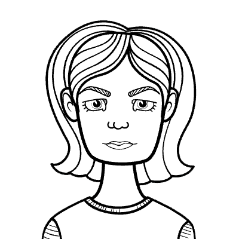

Learn More
Finding What Fits
The same five environments can support each learner in very different ways. Click a student to see how the pieces fit differently for Katie, James, Alex, and Olivia.

Katie can tell you which U.S. presidents owned horses, identify a New Yorker cartoon's artist by linework alone, and rank My Little Ponies by narrative arc.
But she is not a quirky kid with random facts — she is a scholar with a portfolio of deep, self-directed expertise that most adults couldn't match in any of those domains. She thinks in systems, notices patterns others miss, and brings a level of conceptual precision to her ideas that is genuinely rare.
She is also a kid who has been burned. Past social experiences have taught her that being herself — enthusiastic, intense, a little encyclopedic — can make her a target. So she watches before she speaks. She edits herself. She may seem disengaged when she is actually composing a fully-formed thesis in her head, waiting to see if it's safe to say it out loud. Perfectionism isn't vanity for Katie; it's armor.
The goal isn't to fix Katie's social caution or sand down her intensity. It's to build an environment where she doesn't have to choose between being safe and being herself!
PHYSICAL: Give her a consistent, low-traffic spot she can count on — predictability reduces the cognitive load of just arriving somewhere new. Headphones should be an unquestioned option, not a negotiation.
EMOTIONAL: Avoid surprise cold-calls or group sharing without warning. Instead, try: "I'd love to hear your take on this — want to share it with me first, or with the group?" Let her choose. Trust builds slowly and is lost fast.
ACADEMIC: Don't make her prove she knows the basics — she does, and the repetition is alienating. Give her the harder question underneath the question: "Everyone's arguing about X — what are they all missing?" Her perfectionism means she may not turn in work she considers unfinished; reframe completion as a draft, not a verdict.
SOCIAL: She doesn't need a big group — she needs one right person. Pair her with someone who has a real opinion about something, anything. Interest-based connection is far safer than proximity-based grouping for Katie. If another student happens to love history or absurdist humor, that's your opening.
CREATIVE: Katie's interests are not distractions — they are her primary cognitive vocabulary. Let her write the WWII unit through the lens of leadership failure. Let the New Yorker cartoon become a model for political satire analysis. Meet her where her mind already lives, and she will go further than any prompt could take her.